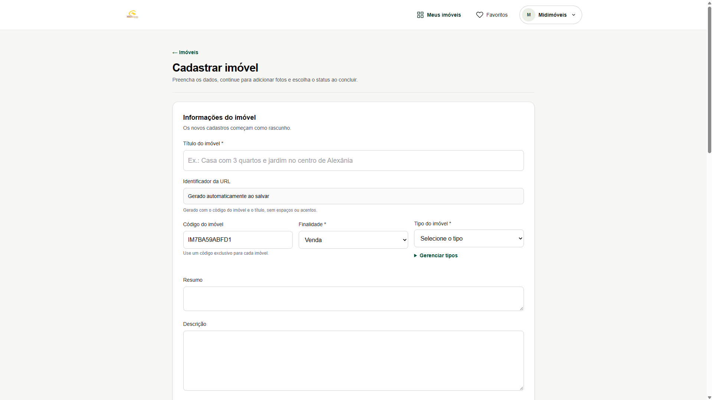

Desenvolvimento Web
Criação e personalização de páginas e interfaces com HTML, CSS e JavaScript, incluindo layouts responsivos, formulários, landing pages e funcionalidades interativas.
Desenvolvimento e configuração de soluções web, gerenciamento de ambientes de hospedagem, publicação de aplicações e integração de serviços digitais, combinando conhecimentos de desenvolvimento, infraestrutura e automação.
Desenvolver uma aplicação ou site é apenas uma parte da construção de uma solução digital. Também é necessário organizar o ambiente de hospedagem, configurar domínios, integrar serviços e manter uma estrutura adequada para seu funcionamento.
A utilização de diferentes tecnologias exige compreender como os componentes se comunicam, desde a interface utilizada pelo usuário até os serviços de infraestrutura, banco de dados e automação.
Atuação em diferentes etapas de desenvolvimento, configuração e integração de soluções digitais.
Criação e personalização de páginas e interfaces com HTML, CSS e JavaScript, incluindo layouts responsivos, formulários, landing pages e funcionalidades interativas.
Desenvolvimento e personalização de sites com WordPress, Elementor e ferramentas complementares, com atenção à organização do conteúdo, experiência do usuário e integração de formulários.
Configuração e gerenciamento de ambientes em servidores VPS com Linux Ubuntu, utilizando Easypanel para administração, implantação e organização de aplicações e serviços.
Utilização de repositórios Git para versionamento de código, organização de projetos, acompanhamento de alterações e preparação de aplicações para publicação.
Integração de aplicações com serviços externos, APIs REST, webhooks e recursos do Supabase para autenticação, armazenamento e gerenciamento de dados.
Configuração de domínios, subdomínios e registros DNS, utilizando Cloudflare para organização do acesso aos serviços publicados e recursos de segurança.
A experiência prática inclui desenvolvimento de páginas de captação de leads, formulários personalizados e soluções integradas a processos comerciais.
Também envolve configuração de ambientes de hospedagem, utilização de servidores VPS, gerenciamento de aplicações e integração com plataformas de banco de dados e automação.
Entre as iniciativas estão projetos voltados ao mercado imobiliário, automação de atendimento, integração com CRM e desenvolvimento de aplicações web.
Interface de cadastro de imóveis desenvolvida para o sistema da MID Imóveis, com campos estruturados para identificação do imóvel, finalidade, categoria, resumo e descrição. O projeto demonstra a criação de interfaces administrativas voltadas à organização e ao gerenciamento de informações imobiliárias.

A combinação de conhecimentos em desenvolvimento web e infraestrutura facilita a criação de soluções integradas, desde a construção das interfaces até a configuração dos ambientes necessários para sua execução.
Essa abordagem contribui para maior autonomia técnica, organização de projetos e capacidade de conectar diferentes sistemas de acordo com as necessidades de cada aplicação.